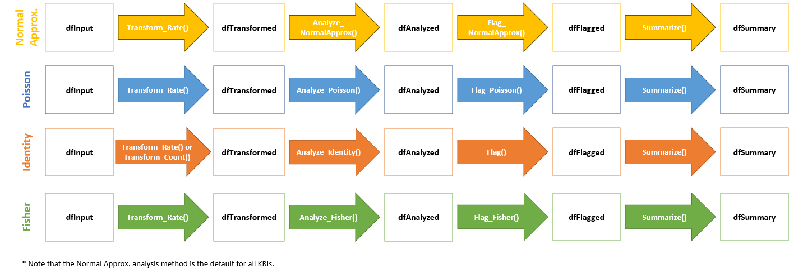

Introduction
The gsm package provides a standardized workflow that leverages Key Risk Indicators (KRIs) and thresholds to conduct study-level Risk Based Quality Management (RBQM) for clinical trials. This vignette provides an overview of the gsm data model. First, we provide a summary of the standardized data pipeline used to calculate KRIs and evaluate thresholds to set site-level flags. We also discuss workflows and reports that allow users to run multiple KRIs concurrently on a study and/or create custom data workflows.
As an overview, clinical and operational data are analyzed using the gsm R package, which generate standardized outputs and reports suitable for use in various RBQM activities. The Appendices of this document provide detailed data input and output specifications for gsm.
KRI Data Pipeline

TODO: Update/Delete Graphic
In the context of clinical research, a KRI is a measure of risk associated with the conduct of a clinical trial. Examples of KRIs include the rate of adverse events or amount of missing data at a site or across sites. Defining and deploying KRIs during study start-up allows sponsors to continually monitor risks to the integrity of the trial and take corrective actions accordingly.
The default KRI data pipeline begins with one or more clinical datasets related to the KRI. An optional participant-level subset is then applied to each dataset before aggregating by participant to quantify the KRI at the participant level. This aggregated dataset is then further summarized by site to obtain site-level metrics.
Generating Input Data
TODO: Update to discuss new framework
Generating input data is outside the scope of the assessment
pipeline. The specifications for input data (i.e., dfInput)
are designed to be flexible enough so that this data frame can be
generated from multiple clinical data standards (e.g., Raw, rawplus, or
CDISC-compliant ADaM). Most assessment workflows have Map()
functions that can be used to generate input data.
For example, the Adverse Event assessment has two Map()
functions:
AE_Map_Raw(): creates input data from rawplus dataAE_Map_Adam(): creates input data from CDISC-compliant ADaM data
These Map() functions are provided for convenience, but
may not work for all clinical studies. When no Map()
function is available for a given assessment, the user is expected to
manually create input data following the specifications for that
assessment. Details on this can be found in the Cookbook
Vignette.
Assessment Data Pipeline

The image above provides an overview of the default KRI assessment pipeline. The pipeline is a standardized four-step process for assessing data issues by going from participant-level input data to a standardized site-level summary of model results. The functions used in each step of the data pipeline along with the input and output datasets are described in more detail below.
-
dfInput: Input data; Cross-domain participant-level input data with all needed data for KRI derivation. Created byMap()functions as needed. -
dfTransformed: Transformed data; Site-level transformed data including KRI calculation. Created byTransform()functions. -
dfAnalyzed: Analyzed data; Site-level analysis results data. Created byAnalyze()functions. -
dfFlagged: Flagged data; Site-level analysis results with flags added to indicate potential statistical outliers. Created by passing numeric thresholds to aFlag()function. -
dfSummary: Summary data; Standardized subset of the flagged data. This summary data has the same structure for all assessments and always includes both KRI and Flag values so that a user can easily look at trends for any given site across multiple assessments. Created using theSummarize()function.
Each assessment has an Assess() function that
sequentially executes all 4 of the supporting functions and returns a
list of datasets and visualizations. The 4 standard datasets that are
always returned are dfTransformed, dfAnalyzed,
dfFlagged, and dfSummary. An additional
dataset, called dfBounds, is generated only when a
supported statistical model is being used. A step-by-step example of the
data assessment workflow can be found in the Data
Analysis Vignette.
Note that each step in this data pipeline can be customized based on the requirements for a specific KRI. The graphic below shows three such workflows.

Custom Pipelines
QTL and Country Analysis
The default KRI data pipeline runs site-level analyses on sourced clinical data. gsm also has the capability to run overall study-level analyses using Quality Tolerance Limits, or QTLs. For example, a user can evaluate the protocol deviation rate at a study-level. Analyses can also be categorized by country identifiers if desired. A user can also run custom pipelines (e.g. stratified analysis) as well (see Appendix 3 for workflow nomenclature and examples).
Running Multiple Assessments
Running multiple assessments simultaneously for a single study is a common use case of gsm and the package provides workflow and reporting functions to streamline this process.
Study_Assess() attempts to run one or more assessment
workflows using shared data and metadata. The metadata used for this
study-level assessment is described in detail in Appendix 1. The
Study_Assess() function returns a list of assessments
containing status information and results that is used as input for the
reporting functions described below.
Study_Report() creates a detailed report showing both
charts and listings summarizing each KRI that was run for the study,
along with a study-level table (via Study_Table()) and a
summary of the workflow run to generate each KRI (via
Study_AssessmentReport()) .
To see a sample report, simply run:
results <- Study_Assess()
Study_Report(results)Additional examples are provided in the Cookbook Vignette.
Appendix 1 - Data Pipeline Specifications
The following section provides a detailed specifications for the required columns for the data pipeline used in the gsm package.The following tables are used in the data pipeline:
-
dfInput: Input data; Cross-domain participant-level input data with all needed data for KRI derivation. -
dfTransformed: Transformed data; Group-level transformed data including KRI calculation. -
dfAnalyzed: Analyzed data; Group-level analysis results data withScorecolumn added providing a statistical score for the group. -
dfFlagged: Flagged data; Group-level analysis results withFlagcolumn added to indicate potential statistical outliers.
Many columns are shared across tables
| Table | Column Name | Description | Type |
|---|---|---|---|
| All | MetricID | The Metric ID | Character |
| All | StudyID | The Study ID | Character |
| All | GroupID | The group ID for the metric | Character |
| All | SnapshotDate | The Date of the snapshot | Date |
| All | Numerator | The calculated numerator value | Numeric |
| All | Denominator | The calculated denominator value | Numeric |
| All | Metric | The calculated rate/metric value | Numeric |
| dfInput | SubjectID | The subject ID | Character |
| dfAnalyzed/dfFlagged | Score | The Stastical Score | Numeric |
| dfFlagged | Flag | The Flag value | Numeric |
Appendix 2 - Workflow Specifications
Assessment workflow metadata objects are passed to the
lAssessments parameter in Study_Assess() to
define functions and parameters (including mappings and
specs) across multiple studies.
The lAssessment object is a named list of metadata
defining how each assessment should be run. By default,
MakeWorkflowList() imports YAML specifications from
inst/workflow. Each item in lAssessments
expects the following parameters:
-
workflow: Array defining one or more functions to be executed as part of the workflow for a given assessment-
workflow[]$name: name of the gsm function. -
workflow[]$inputs: specifies the required input data -
workflow[]$output: specifies the output data from the workflow step, which can be used as an input in the next step in the workflow -
workflow[]$params: specifies parameters to be passed to the function
-
For example, the default workflow for the AE assessment
(inst/workflow/kri0001.yaml) is shown below:
steps:
- name: FilterDomain
inputs: dfSUBJ
output: dfSUBJ
params:
strDomain: dfSUBJ
strColParam: strEnrollCol
strValParam: strEnrollVal
- name: AE_Map_Raw
inputs:
- dfAE
- dfSUBJ
output: dfInput
- name: AE_Assess
inputs: dfInput
output: lResults
params:
strGroup: "Site"
vThreshold: null
strMethod: "NormalApprox"
nMinDenominator: 30